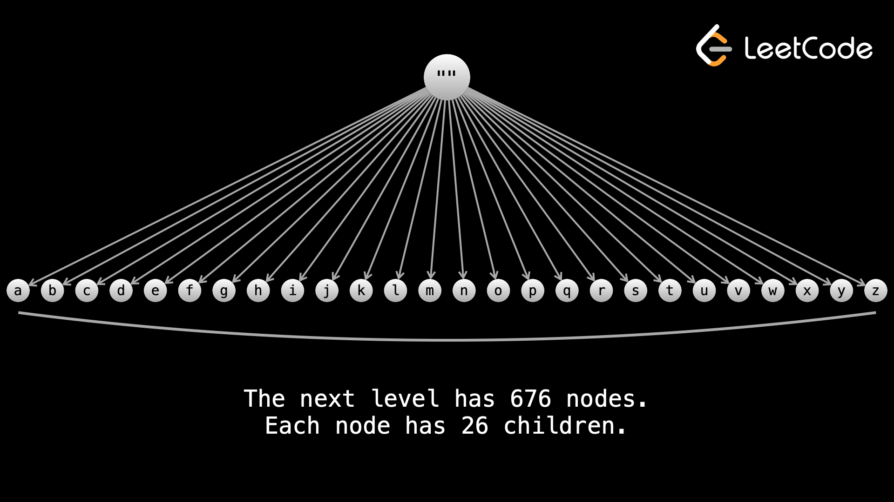
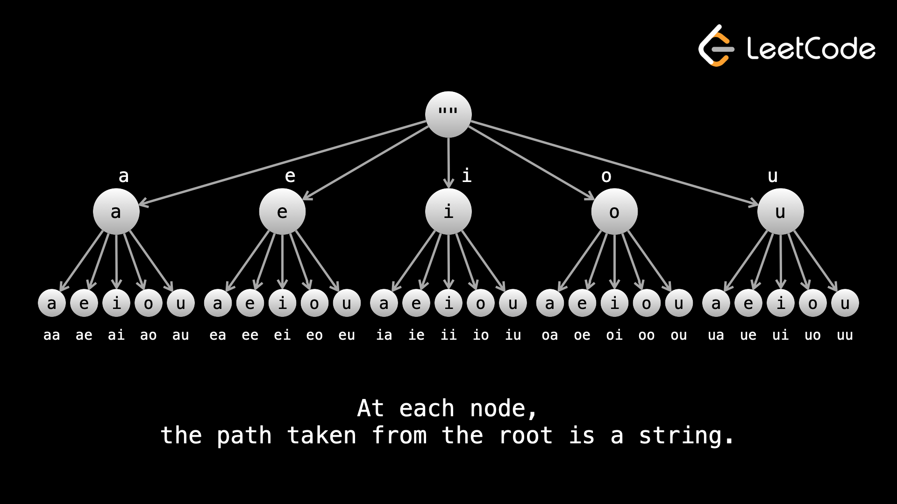

Самый грубый способ решения проблемы — перебор. Сгенерируйте все возможности, а затем проверьте каждую из них на наличие решения.
Представьте, что у вас есть буквы от a до z, и вас попросили сгенерировать строки длины n, используя эти буквы. Есть 26n возможностей, так как каждая из n букв может быть от a до z. Вы можете представить все возможности в виде дерева. Корнем является пустая строка "", а затем все узлы имеют 26 дочерних элементов, причем путь от корня представляет строящуюся строку. Итак, если вы начали с корня и перешли к узлу «g», затем от этого узла перешли к узлу «p», который будет представлять строку «gp». Глубина дерева равна n, а листовые узлы представляют ответы.

Теперь предположим, что мы добавили ограничение, чтобы вместо всех решений длины n нам нужны были только те, которые удовлетворяют этому ограничению. Полный поиск по-прежнему будет генерировать все строки длины n как «кандидаты», а затем проверять каждую из них на наличие ограничения. Это будет иметь временную сложность О(к⋅26n), где k — работа, затраченная на проверку соответствия строки ограничению. На этот раз сложность смехотворно медленная.
Backtracking — это оптимизация, которая предполагает отказ от «пути», если установлено, что этот путь не может привести к решению. Идея аналогична двоичным деревьям поиска: если вы ищете значение x, а корневой узел имеет значение больше x, то вы знаете, что можете игнорировать все правое поддерево. Поскольку количество узлов в каждом поддереве экспоненциально зависит от глубины, возврат назад может сэкономить огромное количество вычислений. Представьте, если бы ограничение заключалось в том, что строка могла содержать только гласные - 26n строк, а затем проверьте каждый из них, есть ли в нем только гласные. При возврате мы отбрасываем все поддеревья, в которых есть согласные, улучшая с O(26n) вариантов до O(5n).

Отказ от пути также иногда называют «обрезкой».
Подводя итог разнице между исчерпывающим поиском и backtracking:
В ходе исчерпывающего поиска мы генерируем все возможности, а затем проверяем их на наличие решений.
В backtracking, мы отсекаем пути, которые не могут привести к решению, создавая гораздо меньше
возможностей.
Backtracking — отличный инструмент, когда проблема требует, чтобы вы нашли что-то целиком, или когда не существует четкого способа найти решение без проверки всех логических возможностей. В LeetCode сильный намек на то, что вам следует использовать обратный поиск, заключается в том, что входные ограничения очень малы (n <= ~ 15), поскольку алгоритмы обратного отслеживания обычно имеют экспоненциальную временную сложность.
К сожалению, на собеседовании вам обычно не сообщают об ограничениях, и даже если вы попытаетесь уточнить у интервьюера, он даст расплывчатый ответ или просто посоветует вам сделать все возможное. Вот почему важно выработать хорошую интуицию, позволяющую распознавать, когда использовать определенный алгоритм.
Backtracking почти всегда реализуется с помощью рекурсии — делать это итеративно не имеет смысла. В большинстве задач с возвратом вы будете что-то создавать либо напрямую (например, изменение массива), либо косвенно (используя переменные для представления некоторого состояния). Вот некоторый псевдокод для общего формата backtracking:
if (base case) {
Increment or add to answer
return
}
for (iterate over input) {
Modify curr
backtrack(curr)
Undo whatever modification was done to curr
}
}Давайте вернемся к аналогии возможностей, представленных деревом.
Каждый вызов функции backtrack представляет собой узел в дереве. Каждая итерация в цикле for представляет дочерний узел текущего узла, а вызов backtrack в этом цикле представляет переход к дочернему узлу.
Строка, в которой вы отменяете изменения, является шагом «backtracking» и эквивалентна перемещению обратно вверх по дереву от дочернего элемента к его родительскому.
В любом заданном узле путь от корня до узла представляет собой строящегося кандидата. Листовые узлы представляют собой законченные решения и обозначают достижение базового случая. Корень этого дерева является пустым кандидатом и представляет область, из которой выполняется исходный вызов backtrack.
В этой главе мы будем использовать деревья для представления процесса поиска с возвратом, поскольку это очень интуитивно понятный способ решения этих проблем.
Если эта аналогия с деревом сбивает с толку; Не волнуйтесь. Видео с пошаговыми инструкциями в следующих примерах задач должно прояснить ситуацию.